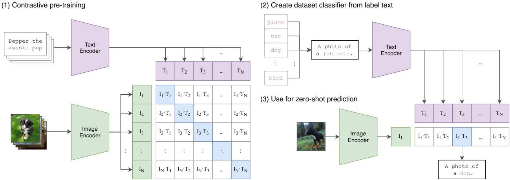

图搜图与文搜图表示学习：数据、损失与小模型蒸馏¶
图搜图先定义视觉上的“相关”，文搜图还需要学习跨模态对齐；小模型可以借助大教师获得训练信号，但最终质量由数据、目标与检索协议共同决定。
任务约束沿用原有设定：每个上线模型不超过 0.6B 参数；教师不受这个参数上限约束。CLIP · SigLIP · DINOv2
图像之间“看起来像”，不一定符合检索目标。同一款鞋的不同视角可以是实例正例，同品牌的另一款鞋却可能是难负例；如果任务只是找风格相近的鞋，标签又会改变。文搜图进一步要求文本约束与视觉证据一致，例如“红色、无图案、长袖”不能只命中“衣服”这个主题。
本文将这些差异落到表示、正负例、损失、教师信号和评测上。重点是如何训练并部署受容量限制的学生模型。跨论文背景见图文技术综述，蒸馏的一般形式见蒸馏专题。以下配方是结合这些机制的工程建议，不是某一篇论文已经验证的统一最优方案。
先定义相关性，再决定表示¶
| 任务 | 正例依据 | 容易混淆的负例 | 表示与监督的起点 |
|---|---|---|---|
| 近重复图像 | 同一原图的裁剪、压缩、轻微修改 | 同背景、相近构图的另一张图 | 视觉特征与近重复标注；检测阈值需单独校准 |
| 实例／同款检索 | 同一商品、物体或地标的不同视角 | 同类但不同实例 | 视觉自监督初始化，加实例 ID 或度量学习 |
| 语义／风格相似 | 主题、风格或用途符合查询定义 | 主题接近但关键属性不符 | CLIP 类语义特征或领域监督 |
| 文搜图 | 图中存在文本要求的对象、属性与关系 | 主体相同但颜色、数量、位置错误 | 图文对齐的双塔，必要时对候选做联合精排 |
“同款不同色”是否相关取决于业务定义；不能在一份数据里将它同时当正例和负例。实例标签通常也不能直接替代文搜图标签：同 SKU 图片中的背面图未必能证明“正面有口袋”。
DINO 的视觉自监督信号不依赖图注，CLIP 的图文配对信号偏向语言可描述的语义，但这只是初始化差异。不能据此断言 DINO 在所有实例任务上都更强，或者 CLIP 图像塔只能做语义检索。应在目标域、目标粒度下比较。
双塔、视觉塔和共享学生¶
对图搜图，查询和候选可由同一视觉编码器产生表示：
其中 \(f_v\) 是视觉骨干，\(g_v\) 是投影或检索头，\(\operatorname{norm}\) 表示 L2 归一化。文搜图则需要文本塔 \(f_t\) 及投影 \(g_t\)，使 \(z_t(q)\) 与 \(z_v(x)\) 在同一检索空间中比较：
两个输出维度相同只是能计算点积的必要条件。把独立训练的文本 embedding 和 DINO 各自投到 512 维，并不会自动获得跨模态对齐。

图中两塔先分别编码，再通过配对目标学习共同空间；文档侧或图像侧可以预计算。零样本分类把类别描述作为文本候选，它并不是实例图搜图的评测结果。原图来自 CLIP。
如果共用一个双塔，视觉特征可以接两个头：一个对齐文本，一个服务实例检索。两个头的库向量需要分别保存，查询也必须走对应的头；共享骨干不意味着两个空间的向量可直接混搜。若两个任务冲突严重，也可分为视觉学生和图文学生。
0.6B 按实际上线模型核算。 一个整体部署的双塔应计算两塔与投影头的总参数；两个独立模型则分别满足上限。共享权重只计一次。量化减少权重字节数，不减少参数个数；8B 模型量化后仍是 8B。教师仅离线使用时，其参数不计入学生容量；若在线精排仍使用大教师，则需另计服务成本。
正例、负例和数据切分¶
一张图可以有多个正确描述¶
真实标题、用户查询、属性描述和 VLM 合成短句可以共同形成图文对，但监督可靠性不同。标题可能包含营销词，caption 可能忽略细粒度属性，VLM 可能补出图中没有的数量或材质。应保留 source、图片来源、实例 ID、人工标签和教师版本，便于按来源检查错误，而不是只保留两列配对数据。
以下是说明字段用途的简化记录，不代表已生成业务数据：
{"image_id":"img_042","entity_id":"sku_017","text":"红色无图案长袖上衣","source":"human","split_group":"sku_017"}
同图多描述、同实例多图都会让 batch 对角线之外出现真阳性。构造损失时应识别多正例或屏蔽这些配对，避免把另一条正确描述当负例。图像去重可结合文件哈希、感知哈希和相似特征；SKU、图像衍生版本及重复文本也要参与分组。
难负例必须在任务定义下不相关¶
可从当前学生召回的高分候选、教师排序或属性相近的商品中选择难例。中文文搜图也可以先用标题 BM25 发现“文本很像、图片属性不符”的候选，再检查图像。BM25 本身只比较文本，不直接完成视觉挖掘。
教师分数可以帮助排除疑似正例，却不是事实标签。不同教师的分数尺度不同；positive-aware 相对阈值应在本域校准，不把另一篇文本检索论文中的阈值直接套到图文模型。负例刷新也以模型排序变化、假负例比例和验证收益为依据，不能保证每隔固定 epoch 重挖就有效。详见难负例实践。
按泄漏单位划分集合¶
同一原图的裁剪、同一商品的多视角和同一实体的近重复描述，应按分组切到同一集合。若目标是检验未见商品泛化，就按商品或实例 ID 切分；若目标是线上已有商品的新查询，需要另设查询留出协议，并明确图库中允许出现训练阶段的商品。
候选图库可以是线上已知的公共库；关键是声明训练是否接触了这些图像、是否使用其 caption 或教师分数，以及是否用到了测试查询和相关性标签。“测试图库中的图像可被检索”与“把测试查询用于生成训练对”不是同一回事。前者可能属于合理的固定语料协议，后者会直接泄漏评测目标。未见实体和未见查询两种结果应分开报告。
对比目标如何表达两个任务¶
图文对比：候选集合中的匹配¶
对 batch 内 \(B\) 个一一配对的图文样本，令 \(S_{ij}=z_t(q_i)^\top z_v(x_j)\)，则文本到图像方向为：
图像到文本方向沿矩阵另一轴计算，CLIP 式训练取两方向的平均。\(\tau\) 控制分布尖锐程度；低温会放大难例梯度，也会放大错误标注的影响。对称训练目标不要求线上同时服务两个检索方向。
若有多正例集合 \(P_i\)，一种监督式多正例写法是：
其中 \(C_i\) 是参与比较的候选集合，包含正例。这个目标平均拉近每个标注正例；另一种“先对正例指数求和再取对数”的目标更偏向让至少一个正例获得高分，两者不能无条件互换。实际选择取决于标签是否完整、是否希望覆盖所有正确视角。
SigLIP 改为逐对二分类。令配对标签 \(y_{ij}\in\{-1,+1\}\)，匹配 logit 为 \(\ell_{ij}=aS_{ij}+b\)，则单对损失为 \(\operatorname{softplus}(-y_{ij}\ell_{ij})\)。它去掉全 batch 的 softmax 归一化，便于分块处理配对，但仍需处理正负比例、偏置和假负例。它不是天然优于 InfoNCE 的替代品，细节见 SigLIP 研读。
图搜图：让增广与实例定义一致¶
图像—图像对比可以使用同一实例的不同视角作为正例；有实例 ID 时，也可在归一化表示上使用三元组损失：
\(m\) 是期望的正负分数间隔。随机增广只在保持相关性时才是有效正例：颜色决定款式时，强颜色扰动会抹掉关键监督；依赖文字或徽标时，裁剪和水平翻转也可能改变标签。相同类别不等于相同实例，不能直接把类别内所有图片都当正例。
共享模型的目标冲突¶
一个可检验的组合是：
这只是组合形式，不是固定配方。先分别获得图文、实例任务的可靠基线，再看共享骨干和损失权重是否造成负迁移。两任务 loss 的数值不能直接表示相对重要性；需要查看梯度尺度、采样比例和各自的验证指标，不能用一个平均分掩盖其中一项退化。
有效 batch 指进入同一对比损失的候选集合。普通梯度累积仍是在多个小候选集合上分别计算 softmax，通常不等价于一个大 batch；GradCache 通过缓存表示梯度再分块重算扩大损失中的候选集合，代价是额外前向计算和重算一致性要求。
教师如何给学生提供有效信号¶
关系蒸馏不要求特征维度相同¶
在相同候选集合上，教师和学生分别产生分数 \(s^T_{ij}\)、\(s^S_{ij}\)。用各自温度形成分布：
教师分布停止梯度；候选顺序、掩码和正例约定需一致。关系蒸馏只比较标量相似度结构，因此教师 4096 维、学生 512 维也可使用。跨模态教师监督文搜图，视觉教师监督实例图搜图；只会输出文本向量的教师不能直接给图片建立文图匹配监督。
温度控制教师的软硬程度，不同教师不能直接共用一组未校准的原始分数。保留人工正例的对比项，可避免完全继承教师的错误；教师本身在目标域失效时，加大蒸馏权重通常只会复制偏差。
特征蒸馏需要处理空间与兼容性¶
特征蒸馏可学习投影 \(P\)：
投影用于连接维度和坐标系；它若在推理中保留，也属于模型与部署成本的一部分。训练时用过投影，不代表学生输出就能直接查询旧教师索引。要么明确训练并验证“学生查询—教师库向量”的兼容性，要么使用学生重新编码全库。
多教师可以分别监督图文关系和视觉细节，也可以先蒸馏再用实例标签适配；具体方案须比较单教师、加教师和改权重的独立收益。学生容量、数据质量、教师任务匹配都可能成为瓶颈，“教师更大”本身不保证收益。
离线缓存必须对应输入版本¶
缓存教师向量、caption 和候选分数能减少重复推理，但缓存键至少关联图片版本、教师版本、预处理和文本模板。随机裁剪之后的学生图像与教师缓存的整图不同，可能形成全局到局部的监督，也可能造成错误；应明确这个目标，不能当成相同输入的精确蒸馏。
MobileCLIP 的数据强化思路可作为小图文模型的补充阅读：把教师知识写入可复用的数据，随后多次训练学生。它与每步在线跑教师的成本结构不同；论文链接见资料清单。
评测应分开衡量相关性与工程误差¶
| 测量对象 | 应报告什么 | 解释边界 |
|---|---|---|
| 文搜图排序 | Recall@K；有分级标注时加 nDCG@K；按属性和关系拆分 | 说明每个查询有几个正例，不能只在很小候选集上报告高分 |
| 实例图搜图 | mAP、Recall@K；按拍摄条件和实例拆分 | 同款标签、同类标签和近重复标签不可混用 |
| 近重复检测 | 指定阈值下的精确率、召回率及误报率；ROC/PR 曲线 | AUROC 是全阈值概览，不能替代上线阈值的误报成本 |
| 表示质量 | 全精度向量的精确搜索结果 | 先排除 ANN 漏召回，才能判断编码器是否改善 |
| 索引与量化 | 相对精确搜索的近邻召回、端到端任务指标 | 近邻集合相同不等于业务相关性高，两项都要看 |
| 运行成本 | 查询编码、库编码吞吐、索引大小、召回和精排延迟 | 标注硬件、图像分辨率、文本长度、batch 和并发 |
一次对比应固定图库快照、预处理、查询模板、指标定义与候选规模。人工评估可将两个模型结果混合去重，隐藏模型来源后独立打分，再仲裁分歧。未标注图片不自动等于不相关；图库存在多个正确视角而标签只有一张时，需说明指标受不完整标注影响。
保留初始化学生、仅任务训练、加入难负例、加入蒸馏四种对照，有助于判断收益究竟来自哪里。共享模型另比较两个单任务模型；量化模型与同一 checkpoint 的全精度版本对照。这里给的是实验变量关系，未预设任何增益数字。
参数、向量和索引是三本成本账¶
600M 参数仅 FP16 权重约为 1.2GB，推理还需激活、工作区和框架开销。图像分辨率、文本长度、视觉 token 数和并发都影响显存与延迟；不能用参数量一项断言是否满足服务要求。
库向量则按 \(N\times d\times b\) 估算裸数据字节数。以 1000 万张图、512 维、每维 FP16 两字节为例，约为 10.24GB，尚未包含 ANN 图结构、ID、元数据和副本。MRL 减少维度 \(d\)，向量 int8/binary 减少每维位数，编码器权重量化影响模型；三者作用于不同部分。
若模型训练支持 MRL，可比较短前缀召回与全维精排；截断后重新归一化，并让查询与库端使用相同约定。低维阶段漏掉的候选无法由全维阶段补回。二值召回后若保留浮点向量重新评分，完整存储也必须计入，不能只报告二值数组的大小。
换骨干、投影头、输入模板或关键预处理通常需要重新验证全库编码。查询服务、库向量和索引应绑定版本；上线时切换一组兼容组件，避免新查询表示与旧库空间混用。MRL 与量化细节见总览的部署章节及 QAT 专题。
继续回查的方法与实现¶
- CLIP 论文精炼版、SigLIP 精炼版、DINOv2 精炼版：分别回查图文对比、逐对 sigmoid 与视觉自监督。
- 领域适配实践：将领域正负例、点击和结构信息迁移到数据设计。
- OpenCLIP、Chinese-CLIP：回查模型初始化、预处理与训练配置，不混用不同 checkpoint 的输入约定。
- MRL 解读、GradCache 解读、Embedding 蒸馏专题：回查容量、训练显存与教师信号的不同约束。